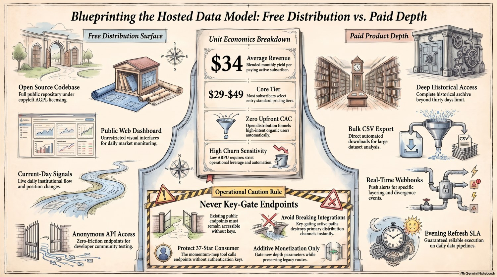
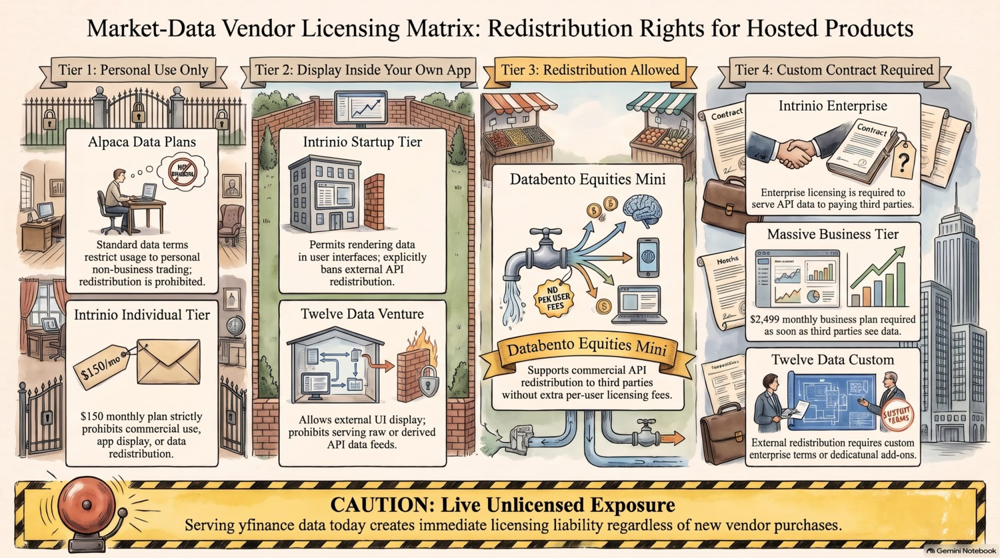
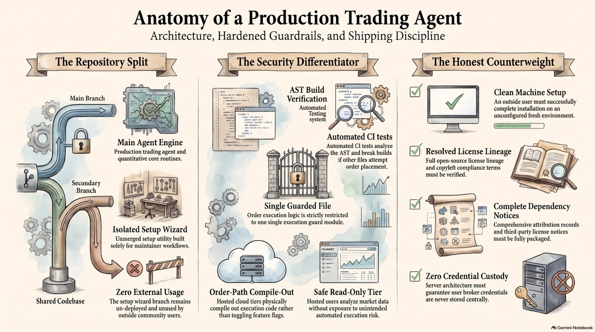

How this log works
Entries are appended, newest first, so the newest sits at the top. Each entry links its public artifact where one exists. Working notes stay private, and numbers drawn from them are kept without the notes. The log is regenerated when research lands.
Entries, newest first
-
The open-source play, worked through Postiz
Free code is the distribution and the hosted cloud is the product. Postiz climbed from about $700 a month in Nov 2024 to roughly $5M ARR by Nov 2026. The sharpest stretch was Nov 2025 to Sep 2026, when monthly revenue went from about $16,000 to about $248,000, about 15 times. Average revenue per subscription is about $34.
- Nov 2024
- ~$700/mo
- Nov 2026
- ~$5M ARR
- Nov 2025 to Sep 2026
- ~$16K to ~$248K/mo, ~15x
- Avg per subscription
- ~$34
Full artifact: open-source-hosted-playbook
-
Where to start: TickerTrace
TickerTrace is the one candidate already hosted, collecting data it legitimately gets from public issuer files, with no broker credentials held. It has no LICENSE file at all. Its hosted REST and MCP run with no auth, and its own
api/usage.pyalready counts calls, so demand is measurable before anyone is charged. A $15/mo tier already died in May 2026 with nobody charged.The load-bearing rule: momentum-mcp (37 stars) calls that API keyless, so never key-gate an existing endpoint.

What stays free and what becomes paid, with the one rule that protects the biggest consumer of the free API. - LICENSE files
- 0
- Auth on hosted API
- none
- momentum-mcp stars
- 37
- Dead tier
- $15/mo
- Tier removed
- May 2026
Notes filed locally, not published. Source: etf-holdings-tracker. Related: momentum-mcp.
-
The data vendor call
Do not sign Intrinio Startup: its own help page counts an API that returns Intrinio data as redistribution, which needs Enterprise, from $1,250/mo. Alpaca Basic is fine for a local test, with IEX real-time and SIP history free once the data is 15 minutes old. For a hosted product the candidate is Databento, the only vendor reviewed that publicly claims redistribution.
The live exposure has nothing to do with what gets bought: TickerTrace serves yfinance prices to third parties today.

Four licence tiers, and the one question that decides which vendor you can buy from. - Intrinio Enterprise
- from $1,250/mo
- Intrinio Startup
- from $333/mo
- Alpaca Basic
- free
- Free SIP history after
- 15 min
Notes filed locally, not published. Sources: Intrinio licensing, Databento US Equities Mini.
-
The agent is the product
mphinance/trading-agentcarries two unrelated projects on two branches: Vesper on main (229 commits, an 83-tool MCP) and the setup wizard on portable-agent (97 commits, distribution.yaml, 28 tests). Neither branch is an ancestor of the other. The wizard is built and tested and has never been used by anyone outside the maintainer.The differentiator is the projectx-desk pattern: a test that fails the build if any file other than the guarded one can place an order.

Two projects, one repository, and the four things that must be true before this ships. - Vesper commits (main)
- 229
- Vesper MCP tools
- 83
- Wizard commits
- 97
- Wizard tests
- 28
Source: mphinance/trading-agent. Notes filed locally, not published.
-
Broker coverage, measured
90 brokers are catalogued. 45 have a renderable connect method, 76 have a server described to exist, 57 can place a trade, and 14 have no MCP at all. The numbers are generated as
catalog.jsoninawesome-broker-mcp, with a check that fails the build when it drifts.- Brokers catalogued
- 90
- Renderable connect
- 45
- Server described
- 76
- Can place a trade
- 57
- No MCP at all
- 14
Source: awesome-broker-mcp, file
catalog.json. Notes filed locally, not published. -
The estate, indexed
90 repositories are indexed, 74 personal and 16 under the tradernetwork org, one file each, kept in a local index.
- Repositories
- 90
- Personal
- 74
- tradernetwork org
- 16
Notes filed locally, not published. The working notes behind these numbers are kept off this page.